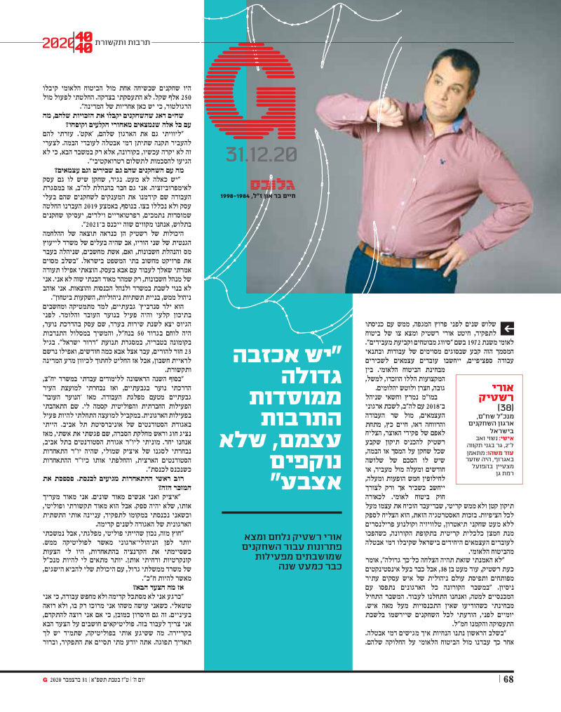
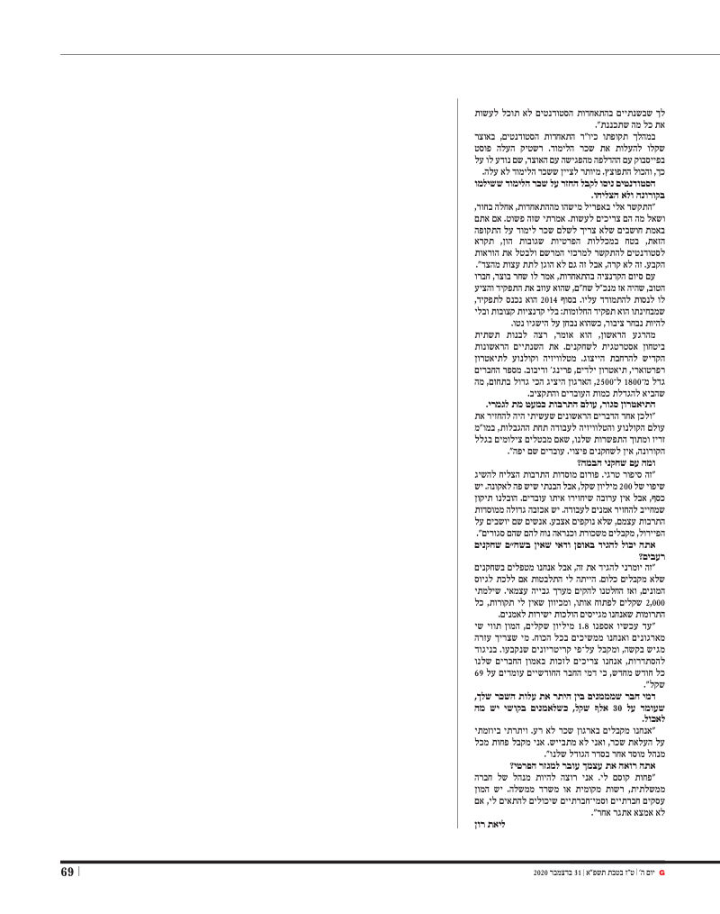

גלובס · דצמבר 2020
אורי רשטיק בנבחרת "40 עד 40" של גלובס
הכתבה המלאה בגלובס, 28.12.2020
מנכ"ל שח"ם, על הובלת רשת ביטחון לשחקנים ולאמנים בשנת הקורונה
בדצמבר 2020 בחר עיתון גלובס את אורי רשטיק, אז מנכ"ל שח"ם – ארגון השחקנים בישראל, לרשימת "40 עד 40": ארבעים הצעירים המבטיחים במשק הישראלי עד גיל 40. הכתבה עליו פורסמה באתר גלובס ב-28 בדצמבר 2020, ובמהדורה המודפסת של מגזין G ב-31 בדצמבר 2020.
על מה נבחר
- רשת ביטחון לשחקנים בשנת הקורונה. ענף התרבות הושבת כמעט שנה. שח"ם בהנהגתו נאבק מול משרדי הממשלה על דמי אבטלה ועל סיוע לשחקנים ולאמנים שעובדים כפרילנסרים.
- "מעמד שכיר" לאמנים בביטוח הלאומי. עוד לפני המגפה, עם כניסתו לתפקיד, הוביל מהלך לתיקון צו סיווג מבוטחים, כך שאמנים פרילנסרים יוכרו כשכירים לצורכי ביטוח לאומי. התיקון הזה הוא שאפשר לרבים מהם לקבל דמי אבטלה כשהענף נסגר.
- קרן חירום לשחקנים במצוקה. כשהמדינה התעכבה בסיוע, הקים שח"ם בהנהגתו קמפיין גיוס המונים. עד סוף 2020 נאספו כ-1.8 מיליון שקלים, שחולקו לשחקנים שנותרו בלי הכנסה.
מאז
- 2021–2026: מנכ"ל אשכולות, החברה לזכויות מבצעים של אמני ישראל.
- היום: מנהל מסחרי וסמנכ"ל תפעול ב-Singit.
הכתבה במגזין G
מגזין G של גלובס, 31 בדצמבר 2020, עמודים 68–69. מתפרסם באדיבות גלובס.


הורדת הכתבה (PDF) המקור באתר גלובס
הכתבה המלאה בגלובס, 28.12.2020
מנכ"ל שח"ם, על הובלת רשת ביטחון לשחקנים ולאמנים בשנת הקורונה
לקריאה באתר גלובס ←